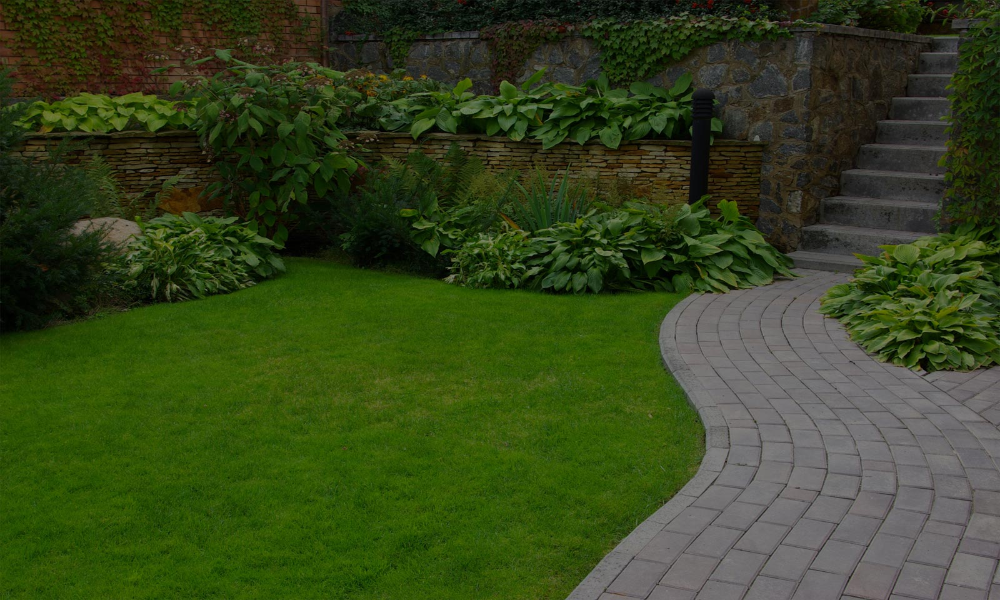

Jardines y caminos

Diseñamos el paisaje de patios y jardines pequeños, potenciando al máximo los espacios, sus alturas, aportando una nueva mirada a los aspectos de estos particulares lugares. Diseñamos caminos en piedra, lajas, madera; combinando materiales y alturas en jardines y parques de variadas magnitudes.